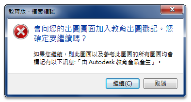
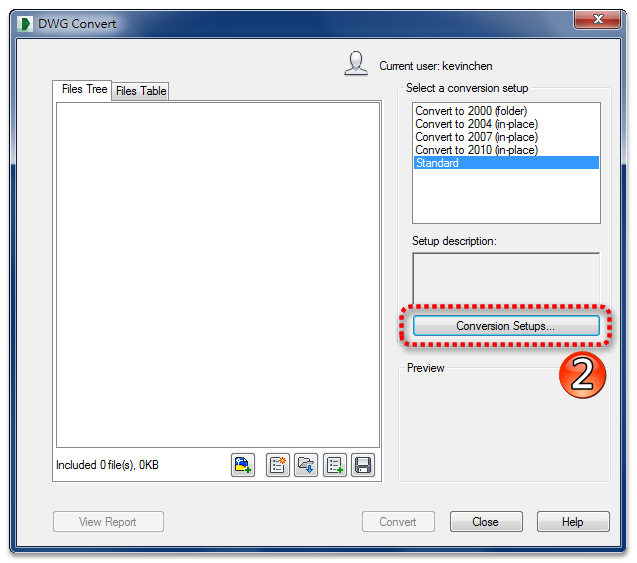
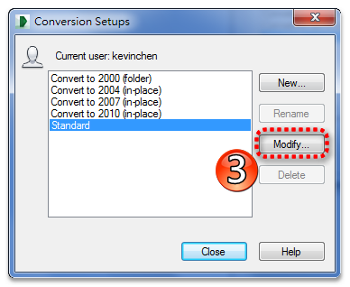
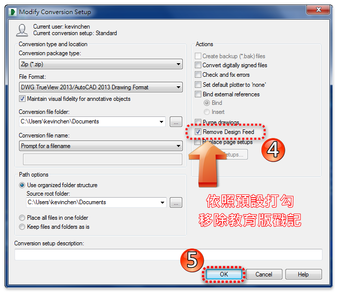
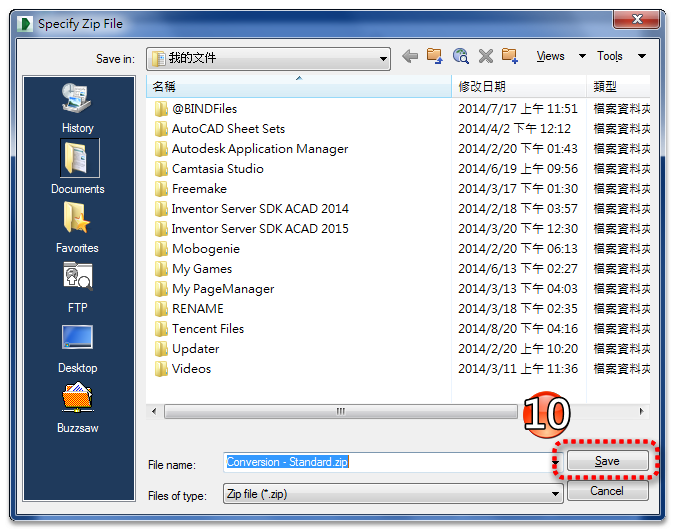
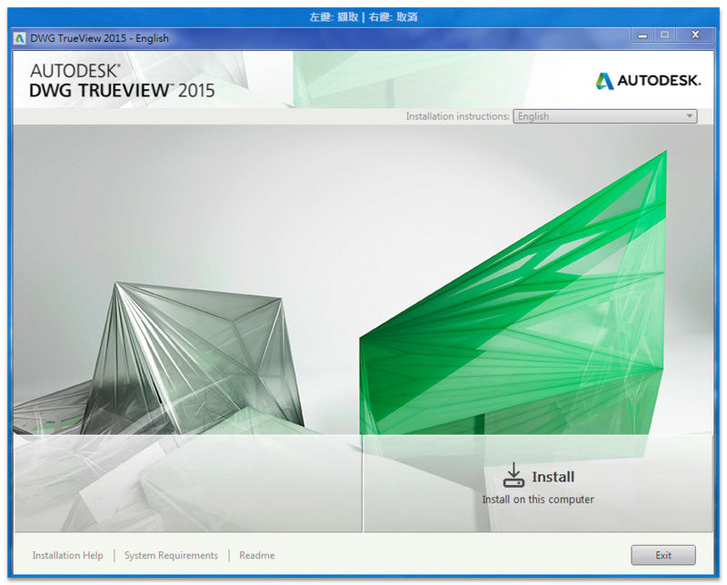
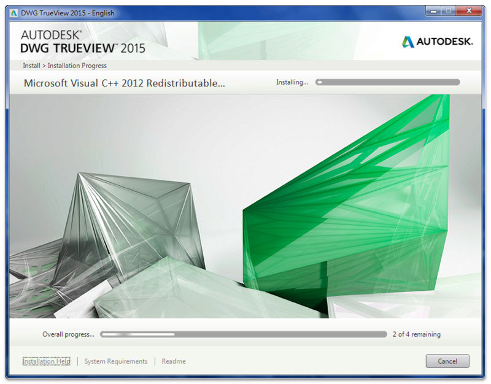
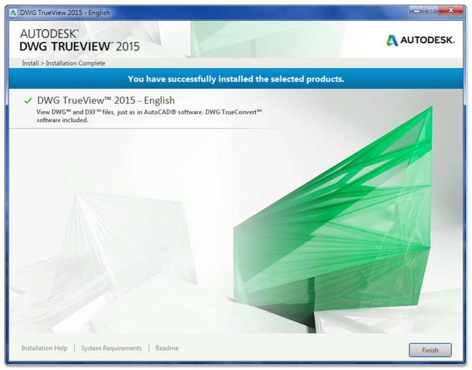

早期常常會碰到「AutoCAD教育版本」儲存的DWG圖檔！
透過 AutoCAD 開啟時就會產生以下訊息：


就必須透過轉換為「DXF格式」才能移除戳記（教學點我）！
但是一次止能一張一張處理，AutoCAD並無提供批次處理工具。
註：從AutoCAD 2015版本開始，只要打開「AutoCAD教育版本」DWG圖檔，然後在AutoCAD 2015儲存之後即可移除戳記。
★★★現在只要您有使用「DWG TrueView」，就可以輕鬆搞定喔★★★
從 DWG TrueView 2015 版本開始，可以移除這惱人的「教育版本戳記」。

教學步驟：
1.開啟「DWG TrueView 2015 - English」

2.點擊「DWG Convert」

3.查看「Standard」傳送設置（第一次查看即可）

4.點擊「Modify」

5.確認打勾「Remove Design Feed」

6.日後轉換時可以點擊「附加檔案」

7.選擇批次處理的DWG檔案

8.點擊「Convert」

9.儲存成「ZIP壓縮檔」...大功告成

註：DWG TrueView 還可以批次降檔（儲存成其他AutoCAD圖檔格式），讓低階版本可以開啟DWG圖檔。
DWG TrueView 2015安裝步驟：





下載DWG TrueView網址，請參考以下文章：
相關文章：